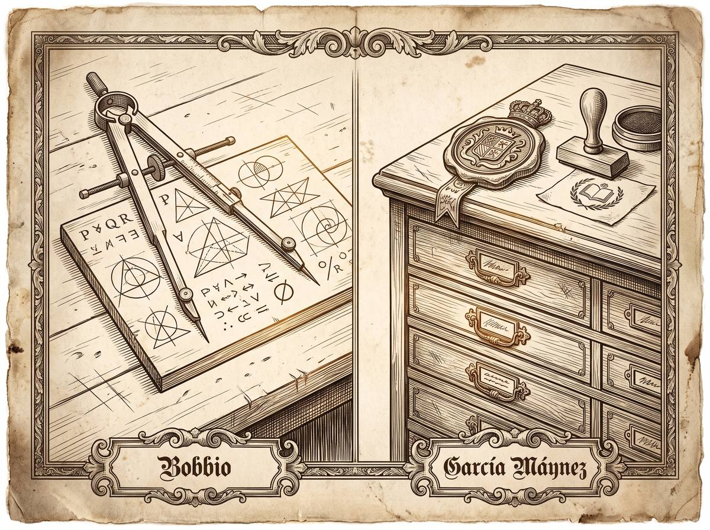

Subpunto 1.2.2 · La perspectiva de las normas jurídicas
Qué es exactamente una norma
Mirar el derecho como un conjunto de normas parece lo natural, y de hecho es lo que hacen las facultades. Pero es una decisión, no una obviedad: se gana un objeto de estudio ordenado y se pierde de vista todo lo demás. Este apartado trata de qué es una norma, no de si es justa — eso viene después.
Prof. Carlos Eduardo Chica-Villacís Docente autor · Universidad Católica de Cuenca
Adoptar la perspectiva de la norma significa situar el concepto de norma como el elemento primario del derecho. Bajo el normativismo —la doctrina según la cual todos los fenómenos jurídicos pueden reducirse a términos normativos— el derecho se concibe como un sistema de normas y nada más.
Lo que se gana. El estudio del derecho obtiene un objeto claro y sistemático. Permite concentrarse en la estructura lógica, en las modalidades de conducta y en las consecuencias deónticas: obligaciones, prohibiciones y permisos.
Lo que se pierde. Un enfoque exclusivamente normativo deriva con facilidad en formalismo abstracto. Se pierde de vista el comportamiento real de jueces y operadores, las relaciones de poder y la legitimidad de las decisiones.
El derecho se construye con lenguaje. Cárdenas Gracia, exponiendo a Mendonca —que a su vez recoge premisas de Wittgenstein—, distingue cuatro funciones básicas.
Transmite información sobre el estado de las cosas. Sus enunciados son verdaderos o falsos según correspondan o no con la realidad. La Constitución tiene 136 artículos.
El emisor intenta dirigir o modificar la conducta del interlocutor. No admite verdad ni falsedad: se valora como válida o inválida, justa o injusta. Debes pagar tus impuestos antes de que concluya el año.
Exterioriza o provoca emociones. Ni describe ni prescribe. ¡Qué injusto es el abandono de los niños!
Realiza un cambio en la realidad por el acto mismo de pronunciar las palabras. Los declaro unidos en matrimonio.
La norma jurídica se adscribe a la función prescriptiva: su carácter es orientar, obligar, prohibir o permitir. Pero conviene aprender pronto a distinguir la intención real del enunciado de su forma aparente, porque en la práctica el lenguaje rara vez se presenta puro. Lo que define a una norma es el propósito de quien la emite, no su apariencia gramatical.
Cárdenas Gracia, exponiendo a García Máynez, distingue el derecho de la moral, de los convencionalismos sociales y de las normas religiosas mediante cuatro criterios. Conviene retenerlos: vuelven a aparecer en el subpunto siguiente, cuando se discuta la relación entre derecho y moral.
Una norma bilateral impone deberes y correlativamente concede a otro la facultad de exigir su cumplimiento: es imperativo-atributiva. En la unilateral, frente al obligado no hay nadie facultado por el sistema para reclamar.
La exterioridad regula la conducta observable, y atiende a la intención solo cuando trasciende socialmente. La interioridad evalúa la rectitud de las intenciones y la conciencia íntima.
La heteronomía es sometimiento a un querer ajeno: la norma viene de una autoridad externa al destinatario. La autonomía es autolegislación: el sujeto reconoce el imperativo dictado por su propia conciencia.
La coercibilidad es la posibilidad de hacer cumplir la norma mediante fuerza institucionalizada, incluso contra la voluntad del obligado. La incoercibilidad exige cumplimiento voluntario.
| Tipo de norma | Bilateral / Unilateral | Externa / Interna | Autónoma / Heterónoma | Coercible / Incoercible |
|---|---|---|---|---|
| Jurídicas | Bilaterales | Externas | Heterónomas | Coercibles |
| Morales | Unilaterales | Internas | Autónomas | Incoercibles |
| Convencionalismos sociales | Unilaterales | Externas | Heterónomas | Incoercibles |
| Religiosas | Unilaterales | Mixtas | Heterónomas | Incoercibles |
Solo las normas jurídicas reúnen las cuatro características de la primera fila. Eso es lo que las distingue: no que sean más importantes, sino que son las únicas que alguien puede exigirle a otro y hacer cumplir por la fuerza.
Apartado elaborado a partir de Cárdenas Gracia (2010), que expone a García Máynez.
Cárdenas Gracia, exponiendo a Bobbio, recoge tres criterios. El primero cruza generalidad —cuántos destinatarios— con abstracción —cuántas conductas—, y da cuatro combinaciones: generales y abstractas, como el Código Penal; generales y concretas, como una ley de movilización; particulares y abstractas, como la ley orgánica de una universidad; particulares y concretas, como una sentencia o un contrato. El segundo distingue por función deóntica: obligaciones, prohibiciones y permisos. El tercero, por naturaleza: categóricas o hipotéticas.
Su clasificación es mucho más extensa —once criterios— y de otro orden. Ordena las normas por sistema, por fuente, por ámbito espacial, temporal, material y personal, por jerarquía, por cualidad, por su relación con la voluntad y por complementación, distinguiendo entre normas primarias y secundarias.
Ahí está la diferencia que importa. El modelo de Bobbio es lógico, semántico y abstracto: le interesa la estructura del lenguaje normativo. El de García Máynez es dogmático e institucional: está diseñado para que funcione el trabajo cotidiano del jurista. Ninguno es mejor; responden a preguntas distintas.
Apartado elaborado a partir de Cárdenas Gracia (2010), que expone a Bobbio y a García Máynez.Huerta Ochoa hace una aportación de método que conviene no pasar por alto: en teoría del derecho hay que explicar primero la norma y después el derecho. Como el derecho se compone de normas, el concepto de derecho no es primario; presupone los de norma y facultad. Huerta Ochoa, exponiendo a Tamayo y Salmorán, sostiene que explicar bien un orden jurídico depende de comprender sus componentes y las relaciones lógicas entre ellos.
Y hay una consecuencia mayor: la concepción de norma que se elija determina todo lo que venga después. Huerta Ochoa lo ilustra con la distinción de Alchourrón y Bulygin sobre si es posible una lógica de normas.
Si la esencia del derecho es guiar la conducta, ¿toda norma jurídica es realmente una prescripción que impone deberes bajo amenaza de sanción? ¿O hay normas que hacen otra cosa: definir un término, conferir una competencia, otorgar un permiso?
Desde el aula
«Quiero detenerme en la pregunta del cierre, porque no es retórica y tiene consecuencias prácticas.
Piensen en el artículo de un código que dice qué se entiende por domicilio. ¿A quién le está ordenando algo? A nadie. No manda, no prohíbe, no permite: define. Y sin embargo es derecho, está en el código y produce efectos. Piensen ahora en la norma que dice que el notario es competente para autorizar una escritura. Tampoco ordena nada: crea una potestad que antes no existía.
Si aceptamos que toda norma es una prescripción respaldada por una sanción, estos artículos no encajan y hay que forzarlos. Si aceptamos que hay normas que hacen otras cosas —definir, conferir competencias, permitir—, el sistema se explica mejor pero perdemos la definición sencilla con la que empezamos.
Esa incomodidad es el motivo por el que este subpunto existe. No se resuelve eligiendo bando el primer día.»